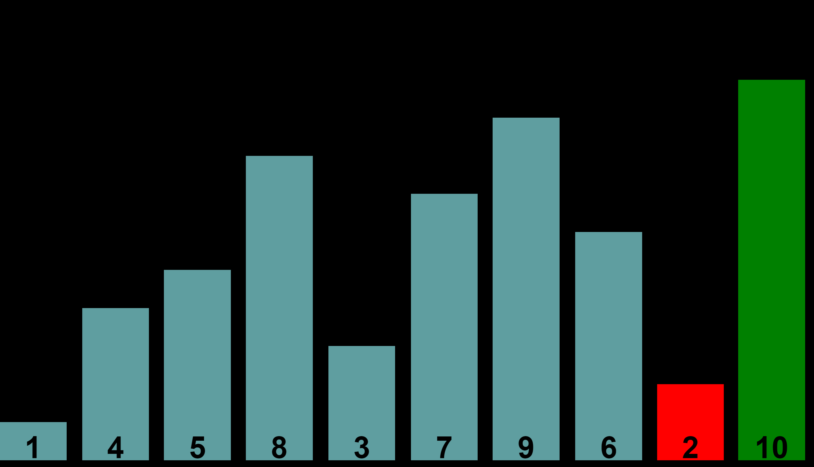

Der Bubblesort ist einer der einfachsten Sortieralgorithmen,
obwohl er nicht zu den "Natürlichen" oder "Intuitiven" zählt.
Angenommen das obere Array soll nun sortiert werden.
Dazu betrachte man zunächst die Stellen 0 und 1 des Arrays.
In diesem Fall die Werte 8 und 1 .
Falls 8 größer ist als 1 dann
tausche die beiden Elemente:

Vergleiche nun 8 mit jedem weiteren Element,
dann ergibt sich:
Da die 10 größer als die 8 ist, wird mit der 10 fortgefahren:
